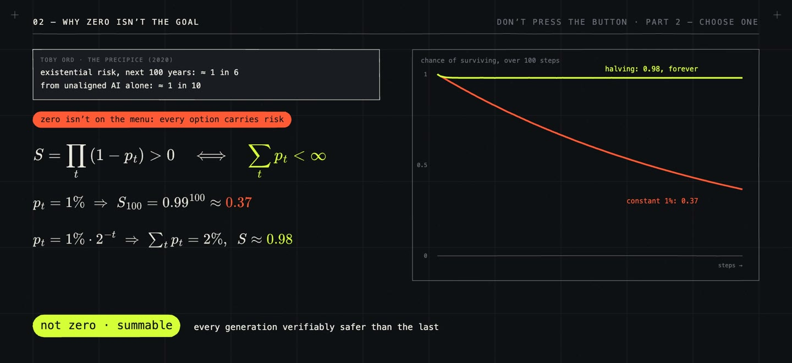

/ 12:45 VIDEO · DON’T PRESS THE BUTTON, PART 2 · 3 MIN READ
Autonomy or superintelligence:
choose one.
How to get the benefits of very capable AI without handing it the power to act alone is an old debate. In 2012, Armstrong, Sandberg and Bostrom studied oracles, systems that only answer questions, and concluded they are safer but still dangerous. Gwern (2016) argued that tools tend to become agents, because agents are worth more. Drexler (2019) proposed many narrow services instead of one general agent, and in 2025 Yoshua Bengio proposed Scientist AI, a capable system with no goals of its own. Human societies faced the same problem with power, and in 1748 Montesquieu's answer was to split it between separate bodies.
This article, part 2 of The Red Button Test, sketches what that split could look like for AI if the worst case were real: a system far smarter than every defender, with goals of its own. It is my own synthesis of these ideas, a proposal rather than an established result.
Zero risk is probably not on offer, since every option, pausing included, carries some. What matters more is whether the risk adds up over time. Survival is the product of not failing at each step, \[S = \prod_t (1 - p_t),\] which stays above zero exactly when \(\sum_t p_t\) is finite. A constant 1% per step leaves \(0.99^{100} \approx 37\%\) after a hundred steps; a risk that halves with each generation, \(p_t = 1\% \cdot 2^{-t}\), sums to 2% and leaves about 98% forever. To make it shrink, it helps to look at what harm needs. It takes capability to work out what to do, autonomy to do it without asking, and access to something that matters. Every system we trust today is low on at least one: a chess engine is superhuman but acts on nothing, a thermostat acts alone but understands nothing. The proposal is never to build into the corner that is both superintelligent and autonomous.

That gives four classes of AI systems, each a different kind of model with its own limits, and humans holding the keys between the classes. Scientist AIs are highly capable models with no autonomy, which answer questions and estimate probabilities but take no actions. Designer AIs are the only models allowed to improve AI: they design new models and nothing else, and are trained only on mathematics and programs, so they know nothing about people or networks to plan with. Counter-intelligence AIs are monitoring models, smarter than the agents they watch, but allowed only to observe, flag and pause. Entrepreneur AIs are the autonomous agents that act in the world: capable, but deliberately not superintelligent, and unable to modify themselves. The rule has to cover connections as well as models, since an oracle called in a loop is an agent, and also swarms, whose collective ability no single-model cap limits, and successors.
The shared backbone is probably the weakest link. Nearly every agent, monitor and judge today is a fine-tune of a few base models trained on the same internet, and that breaks the independence layered defences rely on. Independence is hard to get even by design. When Knight and Leveson tested 27 independently written versions of one program in 1986, they failed together far more often than independence predicts. The scheme also works only if every major developer follows it, and it is slower by design.